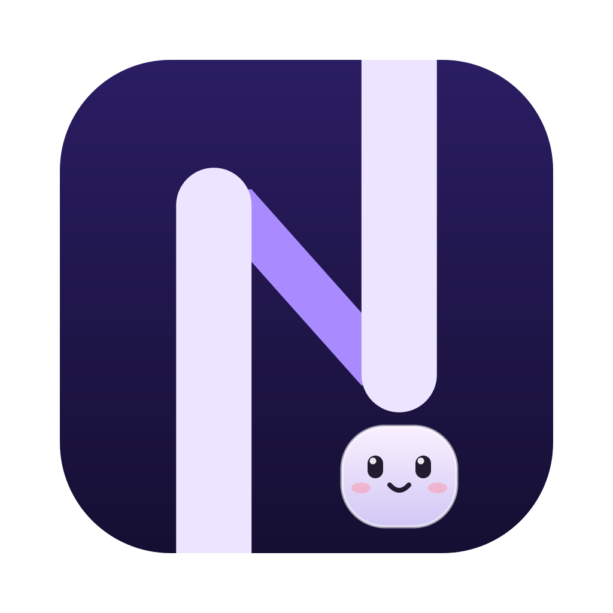
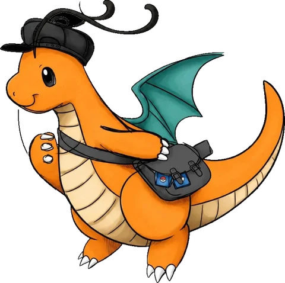
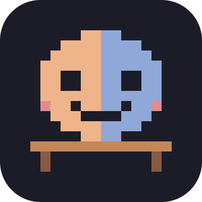

Software & AI Engineer

NookAgentes de IA e cotas
direto no notch

Easy CardsA casa da comunidade
de colecionadores

turnoEM BETAUm escritório em pixel art
para agentes locais
Outras podem ler os ingredientes de um chiclete e desvendar os segredos do universo.
Lex Luthor · Superman (1978)